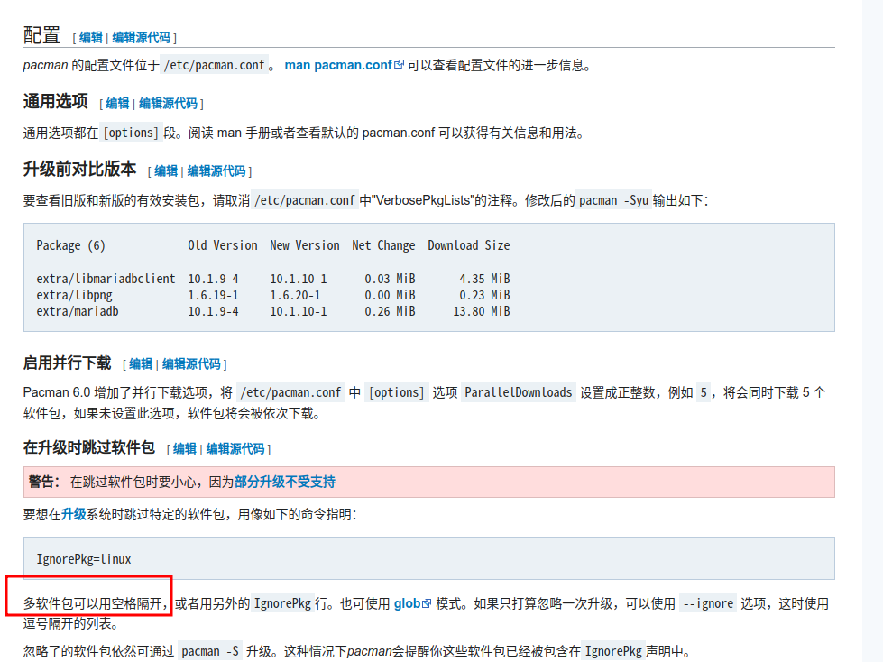

参考链接：降级软件包
使用pacman的临时文件
如果一个新包刚刚被安装并且没有删除pacman cache,你可以在/var/cache/pacman/pkg/中找到较早版本. 安装替换现有的版本.pacman会处理依赖包但不会处理依赖库的版本冲突。如果一个其依赖库因该包降级需要降级，你需要手动降级这些包。
# pacman -U /var/cache/pacman/pkg/package-old_version.pkg.tar.type
对老的软件包，type 应该是 xz，遵循 2020 变更的新软件包，type 应该是 zst。
当成功降级该包以后，请暂时将其加入**pacman.conf**的IgnorePkg section，直到您的问题被解决。
使用nano编辑文件/etc/pacman.conf，找到其中的IgnorePKG字段，按照下图将降级包加入到配置中。

如果本地没有旧版本的cache，或者是被清理了，则需要去Arch Linux Archive下载旧版本的包，然后重复上述操作。
Arch Linux Archive
Arch Linux Archive是official repositories的日更快照。
ALA能被用来降级包或者还原整个系统到过去版本。
网站链接：归档
自动化
downgrade — 基于Bash使用本地缓存和Arch Rollback Machine。详见downgrade(8)。
https://github.com/pbrisbin/downgrade || downgrade^AUR^